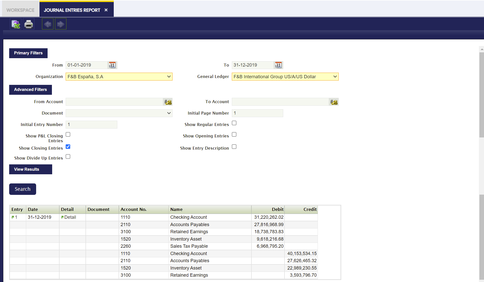
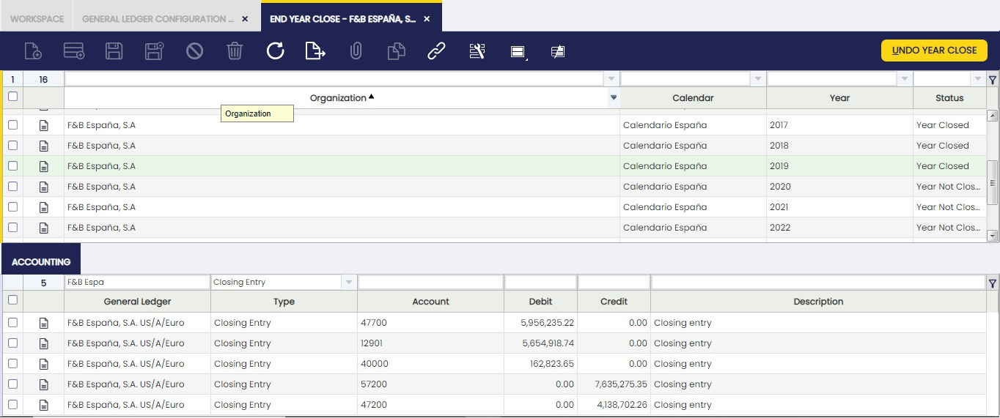

Transacciones
Visión general
Esta sección describe las ventanas relacionadas con las transacciones contables que forman parte de la Gestión Financiera en Etendo. Las ventanas correspondientes son:
Configuración de tipo financiero
Asientos Manuales Simplificados
Generador excel de presupuestos
Configuración del tipo financiero
Aplicación > Gestión Financiera > Contabilidad > Transacciones > Configuración del tipo financiero
Visión general
Esta funcionalidad permite introducir en el sistema todas las financiaciones que tiene la empresa. Es posible explotar la información mediante el informe de bank pool.
En función del producto financiero utilizado en esta nueva ventana Financiación, Etendo genera automáticamente planes de financiación (Leasing, Renting y Préstamos) y también gestiona las facturas y los pagos desde esta misma ventana.
Los productos de financiación habituales son:
- Anticipo de factura
- Aval bancario
- Confirming
- Comercio exterior
- Cuenta de crédito
- Factoring
- Leasing
- Préstamos
- Renting
- Tarjetas de crédito.
Estos métodos de financiación se cargan en el sistema mediante un dataset.
Info
Para más información, visite Tipo financiero.
Cabecera
La cabecera principal tiene los siguientes campos:
- Organización: lista desplegable de organizaciones.
- Tipo financiero: lista desplegable de métodos: Anticipo de factura, Aval bancario, Confirming, Comercio exterior, Cuenta de crédito, Factoring, Leasing, Préstamos, Renting y Tarjetas de crédito.
- Banco/Entidad financiera: lista desplegable de la ventana de terceros.
- Cuenta financiera: lista desplegable de la ventana Cuenta financiera.
- Método de pago: lista desplegable de los métodos de pago indicados en la cuenta financiera seleccionada.
- Nombre: campo libre para añadir información.
- Fecha: campo de fecha (fecha de firma del contrato).
- Fecha de vencimiento: campo de fecha.
- Carencia (mes): campo numérico (enteros).
- Moneda: lista desplegable de la ventana de moneda.
- Importe concedido: campo numérico con 2 decimales.
- Importe dispuesto: campo numérico con 2 decimales.
- Importe disponible: campo numérico con 2 decimales.
- Valor residual: campo numérico con 2 decimales.
- Nº de cuota: campo numérico entero.
- % interés anual: campo numérico % con 2 decimales.
- Comisión periódica: campo numérico con 2 decimales.
- Gastos financieros de apertura: campo numérico con 2 decimales.
- Frecuencia: lista desplegable (Mensual, Bimestral, Trimestral, Trimestral, Semestral, Anual)
- Fecha de cobro: campo numérico. Entero (límite 31)
- Finalidad: campo libre para añadir información.
- Garantía: campo libre para añadir información.
- % comisión por cancelación anticipada: campo numérico % con 2 decimales.
- % comisión por amortización anticipada: campo numérico % con 2 decimales.
- Cuenta contable a largo plazo: campo informativo para indicar la cuenta contable del árbol de cuentas.
- Cuenta contable a corto plazo: campo informativo para indicar la cuenta contable del árbol de cuentas.
- Cuenta contable de la opción de compra: campo informativo para indicar la cuenta contable del árbol de cuentas.
- Proyecto: lista desplegable de la ventana “Proyecto multifase”.
- Centro de costos: lista desplegable de la ventana “Centro de costos”.

Líneas
Las líneas contienen los siguientes campos:
- Nº de cuota: campo numérico. Entero.
- Fecha de amortización/vencimiento: campo de fecha.
- Cuota: campo numérico con 2 decimales.
- Amortización/Renting: campo numérico con 2 decimales.
- Interés: campo numérico con 2 decimales.
- Comisión: campo numérico con 2 decimales.
- Amortización total: campo numérico con 2 decimales.
- Amortización pendiente: campo numérico con 2 decimales.
- Factura: se muestra el enlace a la factura generada (Leasing/Renting).
- Pago: se muestra el enlace al pago generado (Préstamo).
- Financiación de terceros: lista desplegable de terceros (se utiliza como campo informativo para conocer los anticipos de facturas, Confirming, Comex, cuánto se ha financiado de cada uno).
- Fecha: campo de fecha.
- Proyecto: lista desplegable de la ventana “Proyecto multifase”.
- Centro de costos: lista desplegable de la ventana “Centro de costos”.

Contabilidad
Hay tres secciones: “Amortización/Renting”, “Interés” y “Comisión”. Hay seis campos en total, donde tres de ellos representan el producto y los otros tres, el concepto contable. Los 2 campos (producto y concepto contable) no pueden rellenarse en la misma sección. En cada uno de estos campos relacionados, debe indicarse el producto desde la ventana Productos o el Concepto contable si se activa la casilla de verificación Disponible en facturas financieras necesaria para asignar a cada columna. En el caso del tipo de financiación Préstamo, es obligatorio rellenar la parte de conceptos contables.

Cálculo de Préstamo, Leasing o Renting en la solapa de líneas
Rellene los campos necesarios de la cabecera según la descripción de cada uno de ellos indicada al inicio del documento. Esta información permite la creación automática del plan de financiación, que se crea haciendo clic en el botón “Actualizar plan de financiación” en el margen superior derecho de la ventana.

Préstamo:
- Nº de cuota: comienza con el número de cuota 0 y el campo “amortización pendiente” tiene el valor indicado en el campo “importe concedido”, y el campo “fecha” tiene la fecha indicada en el campo de cabecera “fecha”. El resto de las cuotas son correlativas, sumando 1 en 1.
- Fecha de amortización/vencimiento: para ver la fecha de la cuota número 1 del plan de financiación, se indica al hacer clic en el nuevo botón “Crear plan de financiación”. Se muestra un pop up para indicar la fecha. Haga clic en “OK”. El resto de las líneas se crean con la frecuencia indicada en el campo “Frecuencia”, con la fecha de la última cuota creada y la fecha indicada en el campo “fecha de cobro”. Si se indica carencia, la fecha indicada al hacer clic en “Crear plan de financiación” es la primera cuota de carencia; el resto de las cuotas, tanto de carencia como de amortización, se crean según la frecuencia indicada. Las cuotas de carencia se indican con el número de cuota 0.
- Cuota: inicialmente, se calcula la misma cuota para todo el préstamo. Si el tipo de interés cambia durante el periodo del préstamo, la cuota cambia. Para ello, cambie el tipo de interés del 1% de la cabecera y haga clic en el nuevo botón de la cabecera “Actualizar plan de financiación”. La información se actualiza desde la línea siguiente hasta la última línea con un pago asociado.
- Amortización/Renting: importe amortizado en la cuota.
- Interés: interés a pagar en la cuota.
- Comisión: se rellena con la información introducida en el campo “Comisión periódica” de la cabecera, si existe. Si no, el valor es 0.
- Amortización total: suma de los valores de la columna anterior “amortización/renting” para la misma línea calculada. Campo de solo lectura.
- Amortización pendiente: diferencia entre el “importe concedido” indicado en la cabecera y la “amortización total” de la misma línea calculada. Campo de solo lectura.
- Pago: se muestra el pago relacionado.
- Terceros: si se indica en la cabecera, se muestra el tercero en este campo. Si no, puede indicarse manualmente.
- Proyecto: si se indica en la cabecera, se muestra la información del proyecto en este campo. Si no, puede indicarse manualmente.
- Centro de costos: si se indica en la cabecera, se muestra el centro de costos en este campo. Si no, puede indicarse manualmente.
{kind=link}

Leasing:
- Nº de cuota: comienza con el número de cuota 0 y el campo “amortización pendiente” tiene el valor indicado en el campo “importe concedido”, y el campo “fecha” tiene la fecha indicada en el … El resto de las cuotas son correlativas, sumando 1 en 1.
- Fecha de amortización/vencimiento: para ver la fecha de la cuota número 1 del plan de financiación, se indica al hacer clic en el nuevo botón “Crear plan de financiación”. Se muestra un pop up para indicar la fecha. Haga clic en “OK”. El resto de las líneas se crean con la frecuencia indicada en el campo “Frecuencia”, con la fecha de la última cuota creada y la fecha indicada en el campo “fecha de cobro”. Si se indica carencia, la fecha indicada al hacer clic en “Crear plan de financiación” es la primera cuota de carencia; el resto de las cuotas, tanto de carencia como de amortización, se crean según la frecuencia indicada. Las cuotas de carencia se indican con el número de cuota 0.
- Cuota: inicialmente, se calcula la misma cuota para todo el leasing. Si el tipo de interés cambia durante el periodo del leasing, la cuota cambia. Para ello, cambie el tipo de interés del 1% de la cabecera y haga clic en el nuevo botón de la cabecera “Actualizar plan de financiación”. La información se actualiza desde la línea siguiente hasta la última línea con una factura asociada. Por último, se incluye una última línea con el valor residual, si existe, en la misma fecha de la última línea calculada.
- Amortización/Renting: importe amortizado en la cuota.
- Interés: interés a pagar en la cuota.
- Comisión: se rellena con la información introducida en el campo “Comisión periódica” de la cabecera, si existe. Si no, el valor es 0.
- Amortización total: suma de los valores de la columna anterior “amortización/renting” para la misma línea calculada. Campo de solo lectura.
- Amortización pendiente: diferencia entre el “importe concedido” indicado en la cabecera y la “amortización total” de la misma línea calculada. Campo de solo lectura.
- Factura: se muestra la factura relacionada.
- Pago: se muestra el pago relacionado.
- Terceros: si se indica en la cabecera, se muestra el tercero en este campo. Si no, puede indicarse manualmente.
- Proyecto: si se indica en la cabecera, se muestra la información del proyecto en este campo. Si no, puede indicarse manualmente.
- Centro de costos: si se indica en la cabecera, se muestra el centro de costos en este campo. Si no, puede indicarse manualmente.
{kind=link}

Renting
- Nº de cuota: comienza con el número de cuota 0 y el resto de las cuotas son correlativas, sumando 1 en 1.
- Fecha de amortización/vencimiento: para ver la fecha de la cuota número 1 del plan de financiación, se indica al hacer clic en el nuevo botón “Crear plan de financiación”. Se muestra un pop up para indicar la fecha. Haga clic en “OK”. El resto de las líneas se crean con la frecuencia indicada en el campo “Frecuencia”, con la fecha de la última cuota creada y la fecha indicada en el campo “fecha de cobro”.
- Cuota: resultado de “importe concedido” dividido entre el número de cuotas.
- Amortización/Renting: importe amortizado en la cuota.
- Interés: interés a pagar en la cuota.
- Comisión: se rellena con la información introducida en el campo “Comisión periódica” de la cabecera, si existe. Si no, el valor es 0.
- Factura: se muestra la factura relacionada.
- Terceros: si se indica en la cabecera, se muestra el tercero en este campo. Si no, puede indicarse manualmente.
- Proyecto: si se indica en la cabecera, se muestra la información del proyecto en este campo. Si no, puede indicarse manualmente.
- Centro de costos: si se indica en la cabecera, se muestra el centro de costos en este campo. Si no, puede indicarse manualmente.
{kind=link}

Generación de pagos o facturas
Una vez creado el plan de amortización, se pueden generar pagos (préstamos) y facturas (leasing y renting) para cada línea. Esto es posible de forma individual (línea a línea) o en grupos (se pueden seleccionar 3 líneas y se generan 3 pagos/facturas diferentes).
Para ello, seleccione la(s) línea(s) requerida(s) y haga clic en los botones “Crear pago” (préstamos) o “Crear factura” (leasing o renting) que se muestran en el margen superior derecho de la ventana.
Préstamo:

Leasing:
{kind=link}
Renting:
{kind=link}
Cuenta de crédito y tarjetas de crédito informadas en cuentas financieras.
La información de la cuenta de crédito y de la tarjeta de crédito se introduce automáticamente. Para ello, cree una nueva cabecera e indique el método de financiación, “Cuenta de crédito” o “Tarjeta de crédito”. Entonces, se habilita el botón “Añadir cuenta financiera” en el margen superior derecho.

Al hacer clic en el botón, se muestra un pop up y es posible seleccionar una cuenta financiera (solo se muestran aquellas con el indicador “Añadir a bank pool” marcado).


Una vez creada esta cuenta de crédito/tarjeta de crédito en las financiaciones, si su información debe actualizarse, haga clic en el botón “Actualizar cuenta financiera” en el margen superior derecho.
{kind=link}
Los campos que se copiarán desde la cuenta o la tarjeta de crédito son los equivalentes del campo “Cuenta financiera”; el importe del valor residual se indicará en el campo “Importe disponible” y el importe del “Límite de crédito” se indicará en el campo “Importe concedido”. El resto de campos de la cabecera son editables para incluir el resto de la información.
Asientos Manuales Simplificados
Aplicación > Gestión Financiera > Contabilidad > Transacciones > Asientos Manuales Simplificados
Visión general
En Etendo existe una ventana de Asientos manuales que permite al usuario introducir manualmente asientos en el sistema. Esta ventana tiene tres solapas (Conjunto Asientos, Cabecera y Líneas) y, en algunos casos, esto puede resultar difícil para el usuario, ya que podría ser suficiente con solo dos niveles (Cabecera y Líneas). Otro problema de esta ventana es que solo se pueden seleccionar esquemas contables, por lo que, al contabilizar el asiento, solo hay un apunte en la tabla fact_Acct.
Beneficios de Asientos Manuales Simplificados
- Es una ventana más sencilla, ya que no es necesario introducir un conjunto. Hay un nivel menos de introducción de datos.
- Es más sencillo buscar asientos. Sin el nivel de conjunto, es posible buscar directamente asientos específicos.
- En esta ventana, es posible ver asientos que se han creado utilizando la ventana Asientos manuales, por lo que también es posible buscar asientos.
Cabecera
La cabecera de un asiento manual puede incluir asientos que pueden contener varias líneas.
Campo importante a tener en cuenta:
- Multi-Esquema Contable: un indicador
- Si no está marcado, a partir de ese momento se muestra el campo Esquema contable.
- Si está marcado, el sistema no mostrará el campo Esquema contable y no se tendrá en cuenta para las siguientes operaciones.
Líneas
La solapa Líneas permite al usuario introducir los apuntes de un asiento manual, así como información relacionada con pagos de elementos de mayor.
Un campo a tener en cuenta:
- Elemento de mayor: desplegable donde se muestran todos los elementos de mayor. Tiene una visualización lógica y solo se muestra cuando Multi-Esquema Contable está marcado en la cabecera.
Info
Si Multi-Esquema Contable no está marcado, entonces se muestra el campo Cuenta en su lugar.
Contabilidad
Información contable relacionada con el asiento manual
Al contabilizar la Cabecera:
- Todos los apuntes contables se crean o bien con combinaciones contables (Cuenta) o bien con elemento de mayor. No puede haber líneas mezcladas.
- Si Multi-Esquema Contable está:
- Sin marcar: solo se pueden seleccionar cuentas que pertenezcan a un único esquema contable (definido en la cabecera), por lo que al contabilizar el documento solo habrá un asiento. Este comportamiento no cambiará. Proceso de contabilización exactamente igual que en la ventana Asientos manuales.
- Marcado: el usuario selecciona elementos de mayor y, dado que puede tener diferentes combinaciones válidas, al contabilizar el documento tendrá tantos asientos como cuentas diferentes en las que esté definido el elemento de mayor y la organización definida en la cabecera.
Tipos de cambio
La solapa Tipos de cambio permite al usuario introducir un tipo de cambio entre la moneda del esquema contable de la organización y la moneda del asiento manual, que se utilizará al contabilizar el asiento en el libro mayor.
Info
Esta solapa solo se mostrará cuando Multi-Esquema Contable esté habilitado.
Reversión de asiento manual
Info
Para poder incluir esta funcionalidad, debe estar instalado el Financial Extensions Bundle. Para ello, siga las instrucciones del marketplace: Financial Extensions Bundle. Para más información sobre las versiones disponibles, compatibilidad con el core y nuevas funcionalidades, visite Financial Extensions - Notas de la versión.
Esta funcionalidad es especialmente útil para empresas que realizan un cierre mensual, en lugar de un cierre de año, pero con pagos pendientes (de entrada o de salida). Permite al usuario abrir o cerrar el periodo sin tener en cuenta los pagos hasta que se realicen.
Para utilizar esta funcionalidad, tanto en las ventanas “Asientos manuales” como “Asientos Manuales Simplificados”, el usuario puede hacer clic en el botón “Revertir asiento” de la barra de herramientas al seleccionar un registro.

De este modo, Etendo crea automáticamente un asiento de reversión que compensa el importe en las columnas de debe y haber.
Info
Es importante tener en cuenta que, por defecto, el documento de reversión se creará como borrador. Por eso Etendo muestra la casilla “procesar documento” al hacer clic en el botón “Revertir asiento”. De este modo, el usuario puede completar el documento.
Como se muestra a continuación, Etendo muestra una notificación de éxito en verde con el nuevo número de asiento manual.

Al comparar el asiento manual original con el asiento manual de reversión, las columnas de debe y haber muestran la compensación, ya que los importes están invertidos.
Asiento manual original
{kind=link}
Asiento manual de reversión

Opción de cambio de descripción en la ventana Asientos Manuales Simplificados
Si el asiento manual se crea en la ventana Asientos Manuales Simplificados, es posible que el usuario cambie la descripción del asiento manual, una vez que hace clic en el botón “Revertir asiento”, en la ventana emergente correspondiente.
{kind=link}
Esto es útil para distinguir entre el asiento manual original y el de reversión.
Contabilización masiva
Info
Para poder incluir esta funcionalidad, debe estar instalado el Financial Extensions Bundle. Para ello, siga las instrucciones del marketplace: Financial Extensions Bundle. Para más información sobre las versiones disponibles, compatibilidad con el core y nuevas funcionalidades, visite Financial Extensions - Notas de la versión.
La funcionalidad de Contabilización masiva permite al usuario contabilizar o descontabilizar múltiples registros seleccionando los registros correspondientes y haciendo clic en el botón Contabilización masiva.
Además, el Estado contable del/de los registro/s se muestra en la barra de estado, en vista de formulario, o en una columna, en vista de cuadrícula.
Info
Para más información, visite la guía de usuario del módulo Contabilización masiva.
Clonar asiento manual
Info
Para poder incluir esta funcionalidad, debe estar instalado el Financial Extensions Bundle. Para ello, siga las instrucciones del marketplace: Financial Extensions Bundle. Para más información sobre las versiones disponibles, compatibilidad con el core y nuevas funcionalidades, visite Financial Extensions - Notas de la versión.
Con esta funcionalidad, el usuario puede clonar sin esfuerzo un registro seleccionado. Esta característica no solo duplica el registro, sino que también crea una descripción detallada que incluye el número de pedido original.
Para ello, seleccione el registro que desea clonar y haga clic en el botón de copiar registro en la barra de herramientas.
{kind=link}
De este modo, se genera una copia del registro original, incluyendo una descripción y un número de copia, como se muestra a continuación.
{kind=link}
Esta funcionalidad mejora la eficiencia en la gestión de asientos, facilitando la replicación y documentación precisa de las transacciones.
Asientos manuales
Aplicación > Gestión Financiera > Contabilidad > Transacciones > Asientos manuales
Visión general
Un diario de G/L (Esquema contable) permite al usuario contabilizar asientos en el libro mayor y crear pagos de elementos de G/L.
Tal y como ya se ha explicado, la mayoría de los asientos contables se crean al contabilizar documentos como facturas de compra, facturas de venta, etc.
Los asientos contables que no se corresponden con un Tipo de documento existente deben contabilizarse en el libro mayor mediante un Asiento manual.
Además, un Asiento manual puede utilizarse para crear Pagos de elementos de G/L o pagos no relacionados con pedidos o facturas.
Info
Esta funcionalidad es muy útil al contabilizar en el libro mayor una nómina de empleados, ya que el pago de la nómina puede crearse al mismo tiempo.
Por último, un Asiento manual también puede configurarse como una plantilla.
Esta funcionalidad permite al usuario crear los mismos asientos que los contenidos en el Asiento manual configurado como plantilla.
Esta funcionalidad también es muy útil al contabilizar nóminas de empleados, por ejemplo.
Conjunto Asientos
Un conjunto de asientos de G/L permite al usuario agrupar asientos manuales de características similares, que pueden procesarse todos al mismo tiempo.

Tal y como se muestra en la imagen anterior, un Conjunto Asientos de G/L puede contener los siguientes datos:
- el periodo contable
- la fecha contable
- y la moneda
Ninguno de los datos anteriores es obligatorio en este punto, ya que un conjunto de asientos de G/L puede contener varios asientos con diferentes periodos contables y fechas contables. Lo mismo aplica a la moneda, ya que un conjunto de asientos de G/L puede contener varios asientos de distintas configuraciones de esquema contable.
Una vez creado y guardado un conjunto, es posible crear tantos Asientos manuales como sea necesario, que, una vez listos, pueden completarse y procesarse al mismo tiempo como un conjunto único.
Un Asiento manual y, por tanto, su contenido, puede configurarse como Plantilla; dicha plantilla puede utilizarse posteriormente al crear un nuevo Asiento manual mediante el botón de proceso Copiar líneas, tal y como se describe en la siguiente sección.
Asiento manual configurado como “Plantilla”
Como ya se ha mencionado, un Asiento manual y, por tanto, su contenido, puede configurarse como una Plantilla. Para ello, es necesario seguir los pasos que se indican a continuación:
1. crear un Asiento manual para contabilizar, por ejemplo, la nómina de empleados correspondiente al periodo de enero de 2022. Ese Asiento manual debe marcarse como Plantilla.
2. Crear un nuevo Asiento manual para contabilizar la nómina de empleados correspondiente al periodo de enero de 2022. Introduzca una Fecha contable y un Periodo:

3. Pulse el botón de proceso Copiar detalles.
Se muestra una nueva ventana que contiene todas las plantillas disponibles:
{kind=link}
Info
Tenga en cuenta que es posible buscar una plantilla utilizando el número de documento del Asiento manual configurado como plantilla y los campos de descripción.
4. Seleccione una plantilla y haga clic en Aceptar. Después de eso, Etendo rellena el Asiento manual creado más recientemente con los mismos asientos; solo las fechas son diferentes.
Puede ser necesario cambiar los importes de los asientos. Para ello, es posible editar las Líneas del Asiento manual y, a continuación, modificar los importes.
El último paso es contabilizar el Asiento manual; por tanto, los asientos correspondientes se contabilizan en el libro mayor.
Cabecera
La cabecera de un Asiento manual puede incluir asientos, que pueden contener varias líneas de asiento.

La cabecera de un Asiento manual contiene los siguientes datos:
- La organización y la configuración del Esquema contable de la organización, que, una vez seleccionada, establece por defecto el campo Moneda con la de la configuración del esquema contable, por ejemplo USD. No obstante, la moneda puede cambiarse a EUR, por ejemplo. Etendo aplicará el tipo de cambio correspondiente EUR -> USD, ya que la contabilización en el libro mayor debe realizarse en USD.
- La fecha del documento, que no tiene por qué ser la misma que la fecha contable.
La fecha del documento se rellena automáticamente con la fecha actual por defecto, pero siempre puede modificarse. - El periodo contable y la fecha contable dentro de ese periodo. Estas fechas pueden rellenarse automáticamente con los valores introducidos en el Conjunto Asientos, si existe, aunque siempre pueden modificarse.
Existe una casilla de verificación denominada Apertura que puede marcarse simplemente para indicar que un asiento contiene asientos de cuentas de saldo de apertura.
Existe una lista de acciones que pueden ejecutarse desde la cabecera del Asiento manual:
- El botón Copiar detalles permite al usuario copiar los asientos de un asiento configurado como Plantilla en el asiento actual
- El botón Completar permite al usuario completar el Asiento manual una vez introducidas las líneas correspondientes, siempre que el total del debe coincida con el total del haber
- El botón Contabilizar/Descontabilizar permite al usuario contabilizar/descontabilizar un Asiento manual una vez completado
- El botón Cerrar permite al usuario cerrar un Asiento manual para el que no deba realizarse ninguna otra acción o reactivarlo si aún no está contabilizado
- El botón Procesar lote completa el/los Asiento(s) manual(es) del conjunto
Info
Tenga en cuenta que, al completar el Asiento manual, se creará un pago de elemento de G/L para cada línea de asiento que tenga seleccionada la casilla Elementos Abiertos, tal y como se explica en la sección de creación de pagos de elementos de G/L.
Info
El asiento se completará incluso si falla la creación de alguno de los pagos. En este caso, se muestra un mensaje de error indicando las líneas que intentaron crear un pago, pero fallaron.
Líneas
La solapa Líneas permite al usuario introducir los asientos de un Asiento manual, así como la información relacionada con pagos de elementos de G/L.
Contabilidad
Información contable relacionada con el Asiento manual
Asiento manual diferido
Duplicar asientos
Info
Para poder incluir esta funcionalidad, debe instalarse el Financial Extensions Bundle. Para ello, siga las instrucciones del marketplace: Financial Extensions Bundle. Para más información sobre las versiones disponibles, compatibilidad con el core y nuevas funcionalidades, consulte Financial Extensions - Notas de la versión.
Esta funcionalidad permite al usuario duplicar un asiento tantas veces como sea necesario, indicando la periodicidad y el periodo en el que debe realizarse la primera copia. A partir de la segunda copia, la duplicación se realizará con la periodicidad correspondiente. A continuación se muestra el proceso para crear un asiento desde cero y duplicarlo posteriormente.
1- Acceda a la ventana “Asientos manuales” y cree una cabecera:

2- Cree un nuevo registro:

3- Cree las líneas (a registrar) y complete el asiento. Una vez realizados estos tres pasos, se mostrará el botón “Crear plan diferido” en el margen superior derecho.
{kind=link}
4 - Haga clic en el botón y se mostrará una ventana emergente con tres campos: • Tipo de plan de gasto: periodicidad de las copias. • Número de periodos: número de copias requerido. • Periodo: periodo en el que se realizará la primera copia.

5 - Una vez introducida esta información, haga clic en el botón “Hecho” y se generarán tantos registros como el número de copias indicado.
{kind=link}
Por defecto, esta funcionalidad solo está disponible para la ventana “Asientos manuales”, ya que las copias de registros se agrupan bajo una única cabecera. También es posible duplicar estos asientos en “Asientos Manuales Simplificados” solo si existe una preferencia configurada en la ventana “Preferencia” con la propiedad “Mostrar botón Crear plan diferido” y el valor “Y”.

Una vez configurada esta preferencia, el botón se habilitará en “Asientos Manuales Simplificados”. El flujo es el mismo, pero las copias duplicadas no se crearán bajo una cabecera. Es decir, esta información no se mostrará en la ventana “Asientos manuales”, excepto si la información a copiar ya está en ella, en cuyo caso se mostrará.
{kind=link}
Reversión de Asiento manual
Info
Para poder incluir esta funcionalidad, debe instalarse el Financial Extensions Bundle. Para ello, siga las instrucciones del marketplace: Financial Extensions Bundle. Para más información sobre las versiones disponibles, compatibilidad con el core y nuevas funcionalidades, consulte Financial Extensions - Notas de la versión.
Esta funcionalidad es especialmente útil para empresas que realizan un cierre mensual, en lugar de un cierre de año, pero con pagos pendientes (de entrada o de salida). Permite al usuario abrir o cerrar el periodo sin tener en cuenta los pagos hasta que se realicen.
Para utilizar esta funcionalidad, tanto en las ventanas “Asientos manuales” como “Asientos Manuales Simplificados”, el usuario puede hacer clic en el botón “Revertir asiento” de la barra de herramientas al seleccionar un asiento.
De este modo, Etendo crea automáticamente un asiento de reversión que compensa el importe en las columnas de haber y debe.
Note
Por defecto, el documento de reversión se crea como borrador. Por eso Etendo muestra la casilla “procesar documento” al hacer clic en el botón “Revertir asiento”. De este modo, el usuario puede completar el documento.
Como se muestra a continuación, Etendo muestra una notificación de éxito en verde con el nuevo número de Asiento manual.
Al comparar el Asiento manual original con el Asiento manual de reversión, las columnas de debe y haber muestran la compensación, ya que los importes están invertidos.
Asiento manual original
Asiento manual de reversión
Esto es útil para distinguir entre el Asiento manual original y el de reversión.
Contabilización masiva
Info
Para poder incluir esta funcionalidad, debe instalarse el Financial Extensions Bundle. Para ello, siga las instrucciones del marketplace: Financial Extensions Bundle. Para más información sobre las versiones disponibles, compatibilidad con el core y nuevas funcionalidades, consulte Financial Extensions - Notas de la versión.
La funcionalidad de Contabilización masiva permite al usuario contabilizar o descontabilizar múltiples registros seleccionando los registros correspondientes y haciendo clic en el botón Contabilización masiva.
Además, el Estado contable del/de los registro(s) se muestra en la barra de estado, en vista de formulario, o en una columna, en vista de rejilla.
Info
Para más información, consulte la guía de usuario del módulo Bulk Posting.
Cierre de año
Aplicación > Gestión Financiera > Contabilidad > Transacciones > Cierre de año
Visión general
El proceso Crear asiento de regularización permite al usuario cerrar un ejercicio fiscal. Este proceso también cierra de forma permanente todos los periodos del ejercicio (los estándar y los de ajuste).
Es importante remarcar que no es necesario cerrar los periodos estándar de un ejercicio antes de cerrar dicho ejercicio; sin embargo, puede ayudar a realizar el seguimiento de los periodos del ejercicio ya revisados y cerrados.
El proceso de cierre de ejercicio requiere que el ejercicio siguiente esté iniciado y que su primer periodo esté abierto.
Info
Una vez que un ejercicio está cerrado, el estado de ese ejercicio y de todos sus periodos puede revisarse en la ventana de control de apertura/cierre de periodos.
Como ya se ha mencionado, todos los periodos del ejercicio se muestran ahora como Situación del periodo=Cerrado permanentemente, lo que significa que ya no es posible contabilizar ninguna transacción dentro de ese ejercicio, a menos que se ejecute el proceso Borrar asiento de regularización para ese ejercicio.
El proceso Crear asiento de regularización crea los siguientes asientos contables:
1. El asiento de Cierre de Pérdidas y Ganancias.
- Este asiento contable pone a cero todos los tipos de cuenta de Ingresos y Gasto, y la diferencia se contabiliza en la cuenta de Resumen de resultados.
- En otras palabras, las cuentas de Gasto se abonan y las cuentas de Ingresos se cargan, y la diferencia, si la hubiera, se contabiliza en la cuenta de Resumen de resultados.
Tomemos una cuenta de gasto con un saldo deudor de 500,00. El asiento de cierre de P&L crea un apunte contable acreedor de 500,00 en la cuenta de gasto del ejemplo, por lo que su saldo pasa a ser cero.
Si el saldo total de las cuentas de ingresos es mayor que el saldo total de las cuentas de gasto, esa diferencia se abona en la cuenta de Resumen de resultados; esto significa un resultado positivo o un beneficio.
Si el saldo total de las cuentas de ingresos es menor que el saldo total de las cuentas de gasto, esa diferencia se carga en la cuenta de Resumen de resultados; esto significa un resultado negativo o una pérdida.
- En otras palabras, las cuentas de Gasto se abonan y las cuentas de Ingresos se cargan, y la diferencia, si la hubiera, se contabiliza en la cuenta de Resumen de resultados.
- Este asiento contable se contabiliza el último día del último periodo del ejercicio que se está cerrando, es decir, el Periodo de ajuste o 13.º periodo del ejercicio.
- Etendo no crea un Asientos manuales para este asiento contable, sino únicamente el asiento contable.
2. El asiento de Cierre o asiento de Cierre de balance.
- Este asiento contable abona todas las cuentas que tienen un saldo deudor y carga todas las cuentas que tienen un saldo acreedor. El objetivo de este asiento contable es que las cuentas de activo y pasivo queden con saldo cero.
- En otras palabras, tomemos una cuenta de Activos con un saldo deudor de 8.000,00. El asiento de cierre crea un apunte contable acreedor de 8.000,00 en la cuenta de activos del ejemplo.
- Este apunte contable se contabiliza el último día del último periodo del ejercicio que se está cerrando, es decir, el Periodo de ajuste o 13.º periodo del ejercicio.
- Etendo no crea un Asientos manuales para este asiento contable, sino únicamente el asiento contable.
- Este asiento se crea solo si el checkbox Revertir Balance de Cuentas Permanentes está establecido en sí.
Por último, si se especifica una cuenta de Resultados acumulados en la configuración del esquema contable, se crea un asiento adicional con fecha del último día del ejercicio.
Este asiento traslada el saldo de la cuenta de Resumen de resultados a la cuenta de Resultados acumulados.
3. Y el asiento de Apertura o asiento de Apertura de balance.
- Este asiento contable es el asiento inverso del asiento de cierre.
- Siguiendo el ejemplo del punto 2 anterior, el asiento de apertura crea un apunte contable deudor de 8.000,000 en la cuenta de activos del ejemplo. Ese importe es el saldo de apertura de la cuenta de activos para el nuevo ejercicio.
- Este asiento contable se contabiliza el primer día del primer periodo del ejercicio siguiente.
- Este asiento se crea solo si el checkbox Revertir Balance de Cuentas Permanentes está establecido en sí.
Ejemplo del proceso de cierre de fin de ejercicio
Este ejemplo describe el proceso de cierre de fin de ejercicio 2019 de una entidad legal de ejemplo con una organización contable.
Este artículo describe el proceso de cierre de fin de ejercicio manteniendo intencionadamente la actividad de la organización lo más simple posible.
La empresa de este ejemplo inició su actividad antes de 2019; por lo tanto, se puede crear un Asientos manuales configurado como Apertura para registrar el asiento de apertura de 2019 y contabilizarlo en el libro mayor.

Para simplificar, la empresa de este ejemplo ejecutó actividades regulares detalladas que crearon los correspondientes asientos regulares en el esquema contable:
{kind=link}
Imaginemos que F&B España cierra los periodos estándar en cuanto termina cada periodo, y que esto se hace incluso para el último periodo estándar, que es diciembre de 2019.
Los contables pueden utilizar el 13.º periodo para contabilizar ajustes contables en el libro mayor mediante la contabilización de uno o varios Asientos manuales, antes de ejecutar el proceso Cierre de ejercicio.
Una vez finalizado 2019 y listo para cerrarse, la empresa de este ejemplo puede ejecutar el proceso Crear asiento de regularización de 2019 desde la ventana Cierre de año.
El botón de proceso Cierre de ejercicio ejecuta el proceso de cierre de fin de ejercicio para esta organización de ejemplo.

Revertir Balance de Cuentas Permanentes establecido en Sí
Etendo crea los asientos de cierre detallados a continuación si el checkbox Revertir Balance de Cuentas Permanentes del esquema contable de la Organización está establecido en Sí antes de ejecutar el proceso Crear asiento de regularización.
Info
Tenga en cuenta que los asientos contables siguientes también pueden revisarse en la ventana Cierre de año, en la solapa Contabilidad.
- Con fecha del último día del ejercicio, el Asiento de cierre de P&L.
Este asiento pone a cero todas las cuentas de Ingresos y Gasto, y se contabiliza en la cuenta definida como Resumen de resultados.

- Con fecha del último día del ejercicio, el Asiento de cierre.
Este asiento pone a cero todas las cuentas de Activos, Pasivo y Patrimonio neto. Además, se crea un asiento adicional para trasladar el saldo de la cuenta de Resumen de resultados a la cuenta de Resultados acumulados:  - Con fecha del día del ejercicio siguiente (01-01-2022), el Asiento de apertura. Este asiento es el asiento inverso del asiento de cierre anterior: La organización de este ejemplo puede lanzar los informes de Balance 2020 y Pérdidas y Ganancias 2021 desde la ventana de estructura de Balance y P&L:
{kind=link}
{kind=link}
Balance 2020:

Pérdidas y Ganancias 2021:

Revertir Balance de Cuentas Permanentes establecido en No
Etendo crea los siguientes asientos de cierre si el checkbox Revertir Balance de Cuentas Permanentes del esquema contable de la Organización está establecido en No antes de ejecutar el proceso Crear asiento de regularización.
Info
Tenga en cuenta que los asientos contables siguientes también pueden revisarse en la ventana Cierre de año, en la solapa Contabilidad.
- Con fecha del último día del ejercicio (31-12-2019), el Asiento de cierre de P&L:
- y con fecha del último día del ejercicio (31-12-2019), el siguiente asiento, ya que se ha definido una cuenta de Resultados acumulados para el esquema contable de la organización:
{kind=link}
La organización de este ejemplo puede lanzar los informes de Balance 2019 y Cuenta de resultados 2019 desde la ventana de estructura de Balance y P&L. Obtendrá el mismo Balance y Cuenta de resultados que los mostrados para el escenario Revertir Balance de Cuentas Permanentes establecido en Sí**.
Cierre de año
En la ventana Cierre de año se muestran todos los ejercicios creados previamente en la ventana de Calendario fiscal. Esos ejercicios pueden cerrarse en esta ventana.
Los registros mostrados en esta ventana se filtran por su Estado y la Organización, mostrando únicamente los ejercicios que aún no están cerrados y que pertenecen a la organización en la que el usuario ha iniciado sesión. Estos filtros pueden eliminarse haciendo clic en el icono del embudo.
Esta ventana muestra dos solapas. La primera solapa muestra todos los ejercicios existentes. Una vez seleccionado un registro en esta solapa, la solapa inferior muestra los asientos contables relacionados, es decir, los asientos de cierre generados por el proceso Crear asiento de regularización, así como los correspondientes asientos de apertura del ejercicio siguiente.
De este modo, es más fácil y rápido ver la contabilidad generada cuando se cierra un ejercicio. Puede encontrarse más información en la solapa Contabilidad a continuación.
La forma de cerrar un ejercicio es:
- Utilice los filtros de la rejilla para mostrar el ejercicio a cerrar.
- Seleccione el ejercicio.
- Haga clic en el botón Cierre de ejercicio y haga clic en OK.
Una vez hecho, Etendo informa de que el proceso se ha completado correctamente.
Todos los periodos de ese ejercicio y de esa organización quedarán cerrados permanentemente. La forma de deshacer el cierre del ejercicio es la misma, pero haciendo clic en Borrar asiento de regularización.
Como se muestra en la imagen anterior, los campos principales de esta ventana son:
- Organización.
- Calendario.
- Ejercicio.
Borrar asiento de regularización
Si un ejercicio (p. ej., 2019) está cerrado, no será posible realizar ninguna contabilización dentro de ese ejercicio a menos que se ejecute el proceso Borrar asiento de regularización para ese ejercicio.
Este proceso abre el ejercicio y todos sus periodos. También revierte todos los asientos del libro mayor contabilizados por el proceso de cierre de fin de ejercicio; por lo tanto, los asientos de cierre/apertura ya no se muestran en el informe de asientos, a menos que el proceso de cierre de fin de ejercicio se ejecute de nuevo para el ejercicio.
- Estado: puede ser Ejercicio no cerrado o Ejercicio cerrado
Contabilidad
En la solapa Contabilidad de la ventana Cierre de año se muestran todos los asientos contables generados cuando un ejercicio se cierra o cuando se abre, agrupados por cuenta. Estos apuntes contables pueden ser:
- Asientos de apertura
- Cuentas de resultados
- Asientos de cierre
- Asientos regulares
- Reparto
De este modo, es más fácil revisar los asientos contables realizados en el proceso de cierre de ejercicio.
{kind=link}
Como se muestra en la imagen anterior, los campos principales de esta ventana son:
- Esquema contable.
- Tipo. Puede ser Asiento de apertura, Asiento de cierre, Cuenta de resultados, Asiento regular o Reparto.
- Cuenta. Tenga en cuenta que los apuntes contables se agrupan por Cuenta, mostrando solo un registro.
- Debe.
- Haber.
Para explicar esta solapa, es mejor seguir el mismo ejemplo que en la sección de introducción y mostrar cómo esta solapa presenta los resultados.
Revertir Balance de Cuentas Permanentes establecido en Sí
Etendo crea los siguientes asientos de cierre si el checkbox Revertir Balance de Cuentas Permanentes del esquema contable de la Organización está establecido en Sí:
- Con fecha del último día del ejercicio (31-12-2019), el Asiento de cierre de P&L.
Este asiento pone a cero todas las cuentas de Ingresos y Gasto.
 - Con fecha del último día del ejercicio (31-12-2019), el Asiento de cierre.
- Con fecha del último día del ejercicio (31-12-2019), el Asiento de cierre.
Este asiento pone a cero todas las cuentas de Activos, Pasivo y Patrimonio neto.

- Con fecha del día del ejercicio siguiente (01-01-2020), el Asiento de apertura.
Este asiento es el asiento inverso del asiento de cierre anterior:

{kind=link}
Revertir Balance de Cuentas Permanentes establecido en No
Etendo crea los siguientes asientos de cierre si el checkbox Revertir Balance de Cuentas Permanentes del esquema contable de la Organización está establecido en No:
- Con fecha del último día del ejercicio (31-12-2019), el Asiento de cierre de P&L:

- y con fecha del último día del ejercicio (31-12-2019), el siguiente asiento, ya que se ha definido una cuenta de Resultados acumulados para el esquema contable de la organización:

Proceso contable
Aplicación > Gestión Financiera > Contabilidad > Transacciones > Proceso contable
Visión general
El Proceso contable permite al usuario contabilizar de forma masiva las transacciones relacionadas con una tabla transaccional determinada o con todas ellas.
{kind=link}
Tal y como se muestra en la imagen anterior, la funcionalidad Proceso contable permite al usuario:
- seleccionar una Organización o todas ellas si no se selecciona una organización en particular
- seleccionar una Tabla o todas ellas si no se selecciona una tabla en particular.
- y seleccionar una Desde fecha y Hasta fecha; si no se selecciona ninguna fecha, se contabilizarán todas las transacciones disponibles.
Tras ejecutar el proceso, Etendo informa del número de asientos contables contabilizados en el libro mayor para cada tabla, con el fin de contabilizar de nuevo la(s) tabla(s) transaccional(es) en el libro mayor.
{kind=link}
Este proceso puede lanzarse siempre que sea necesario:
- Puede ejecutarse si existen transacciones pendientes de contabilizar de forma masiva cuando el Proceso del servidor contable no está habilitado o si no está habilitado para un conjunto determinado de tablas.
- También puede ejecutarse después de ejecutar el proceso Reinicializar cuentas como forma de regenerar los asientos contables.
Presupuesto
Aplicación > Gestión Financiera > Contabilidad > Transacciones > Presupuesto
Visión general
Info
Para poder incluir esta funcionalidad, debe estar instalado el Financial Extensions Bundle. Para ello, siga las instrucciones del marketplace: Financial Extensions Bundle. Para más información sobre las versiones disponibles, compatibilidad con el core y nuevas funcionalidades, visite Financial Extensions - Notas de la versión.
Warning
Si no dispone del módulo Financial Report Budget del Financial Extensions Bundle, esta ventana permanecerá en una versión heredada con funcionalidad limitada. No podrá incluir elementos de Asientos manuales en los valores reales considerados en el informe de presupuesto, el informe no tendrá la columna de Diferencia y las dimensiones para filtrar el informe no incluirán toda la Dimensión de contabilidad como en este caso.
Permite crear y gestionar presupuestos, tanto de ingresos como de gastos, con fines de informe, ofreciendo a los usuarios la posibilidad de comparar los valores presupuestados con los valores reales contabilizados en el correspondiente Esquema contable.
Example
Un presupuesto puede definirse, por ejemplo, asignando un gasto previsto de 400.000 EUR en salarios y 2.000 $ en servicios de Internet para el mes de septiembre de 2025.
{kind=link}
Al final del periodo, los usuarios pueden verificar el valor real y analizar la diferencia con respecto al presupuesto definido.
{kind=link}
Los valores reales considerados incluyen tanto asientos contables como asientos manuales (elemento de Asientos manuales), garantizando una visión completa de la ejecución del presupuesto.
Cabecera
La cabecera define los datos principales de cada presupuesto:
- Organización: organización a la que pertenece el presupuesto.
- Nombre: nombre identificativo del presupuesto.
- Ejercicio: ejercicio fiscal al que aplica el presupuesto.
- Descripción: información adicional o explicativa sobre el presupuesto.
- Activo: casilla de verificación que habilita o deshabilita el presupuesto.
- Exportar datos reales: casilla de verificación; al seleccionarla, las cantidades reales se exportarán a Excel además de las cantidades presupuestadas.
Líneas
En la solapa Líneas, el usuario puede añadir líneas de presupuesto. Cada línea puede referirse a un periodo específico, proyectando y comparando gastos/ingresos según la cuenta contable seleccionada. La Dimensión de contabilidad está disponible como filtros, seleccionables de uno en uno, en la sección Dimensiones (tercero, producto, etc.).
{kind=link}
Campos a tener en cuenta:
- Secuencia: número de secuencia de la línea.
- Esquema contable: esquema contable asociado.
- Cuenta Contable: cuenta contable vinculada. Este elemento es el que determina si el presupuesto se refiere a un ingreso o a un gasto.
- Moneda: moneda en la que se expresa el presupuesto.
- Periodo: periodo contable al que corresponde la línea.
- Importe: importe presupuestado. Este es el valor que se debe considerar al expresar la diferencia entre el importe presupuestado y el importe real en el informe de presupuesto generado.
- Imp.real: importe real registrado. Esta información se actualiza una vez generado el informe, solo si se seleccionó la casilla de verificación Exportar datos reales.
- Cantidad: cantidad presupuestada. Este es un valor opcional.
- Precio unitario: precio unitario neto. Este es un valor opcional.
- Descripción: información adicional sobre la línea.
- Activo: casilla de verificación que habilita o deshabilita la línea.
Botones
Exportar presupuesto a excel: genera un documento Excel como un Informe con información del presupuesto.
Copiar Presupuesto: duplica líneas de presupuestos creados previamente.
Informe
El informe de presupuesto permite una comparación entre los importes presupuestados y los reales. Incluye una columna Diferencia, que muestra el resultado de restar el valor real al valor presupuestado, facilitando así el análisis de desviaciones.
Los campos presentados en el informe son:
- Qty: cantidad presupuestada.
- Precio: precio unitario.
- Importe: importe presupuestado.
- Actual: importe real registrado.
- Diferencia: diferencia entre importes presupuestados y reales.
- Periodo: periodo contable correspondiente.
- Dimensión de contabilidad: filtros aplicados por dimensiones (p. ej., tercero, centro de costes, producto, proyecto, etc.).
- Organización: organización a la que corresponde el presupuesto.
- Descripción: información adicional sobre la línea.
- Moneda: moneda en la que se expresa el presupuesto.
Ejemplo de resultados del informe:
Generador excel de presupuestos
Aplicación > Gestión Financiera > Contabilidad > Transacciones > Generador excel de presupuestos
Mediante el uso de los filtros necesarios, como terceros, producto, grupo de terceros, categoría de producto, etc., el usuario puede generar informes de presupuesto en Excel para utilizarlos con fines específicos.
{kind=link}
Documentos no contabilizados
Aplicación > Gestión Financiera > Contabilidad > Transacciones > Documentos no contabilizados
Visión general
El informe Documentos no contabilizados lista las transacciones y/o documentos en estado Completado que aún no están contabilizados.
Este informe puede utilizarse para asegurarse de que no existen documentos pendientes de contabilizar:
- al cerrar un periodo contable o un ejercicio fiscal, ya que una vez que un periodo está cerrado no es posible contabilizar dentro de ese periodo
- al ejecutar informes financieros, ya que una transacción o documento no contabilizado no se tendrá en cuenta en los informes financieros

Las transacciones y/o documentos no contabilizados que se muestran se dividen por tipo, por ejemplo:
- Asiento
- Factura de proveedor
- Factura o factura de cliente
- Pago a proveedor
- Transacción financiera
- Cobro o pago
- etc.
y es posible navegar al documento no contabilizado y, por tanto, contabilizarlo haciendo clic en el campo Fecha junto al documento o transacción.
Por último, es importante destacar que:
- Los filtros Fecha desde y Fecha hasta permiten al usuario acotar las transacciones no contabilizadas que se mostrarán en el informe, teniendo en cuenta su fecha de transacción o fecha del documento.
- No es necesario introducir un Esquema contable para acotar la información contable porque:
- si un documento no está contabilizado, no lo está para ninguno de los esquemas contables para los que debería contabilizarse
- y si un documento está contabilizado, lo está para todos los esquemas contables para los que debería contabilizarse.
Regularización de IVA
Aplicación > Gestión Financiera > Contabilidad > Transacciones > Proceso de regularización de IVA
Info
Para poder incluir esta funcionalidad, debe estar instalado el Financial Extensions Bundle. Para ello, siga las instrucciones del marketplace: Financial Extensions Bundle. Para más información sobre las versiones disponibles, compatibilidad con el core y nuevas funcionalidades, visite Financial Extensions - Notas de la versión.
Visión general
El módulo de Regularización de IVA le permite ajustar automáticamente las cuentas para asegurar que el saldo de IVA sea correcto. Esto implica comprobar las cuentas en las que este proceso es necesario y crear el asiento manual correspondiente para regularizar el IVA. Este proceso es esencial para mantener registros financieros precisos y el cumplimiento de la normativa fiscal.
A continuación se indican los pasos necesarios para llevarlo a cabo para un periodo de tiempo específico.
Proceso de regularización de IVA
Configuración de cuentas
Para habilitar que una cuenta forme parte del proceso de regularización de IVA, es necesario acceder a la ventana Árbol de cuentas, seleccionar la organización a la que pertenece la cuenta y, en la solapa Valor del elemento, seleccionar la cuenta correspondiente y marcar la casilla Regularización de IVA como activa.

Proceso de regularización de IVA
- Vaya a la ventana
Aplicación>Gestión Financiera>Contabilidad>Transacciones>Proceso de regularización de IVA. - Complete los siguientes campos obligatorios:
- Esquema contable: seleccione el esquema contable al que pertenece la cuenta a regularizar.
- Organización: seleccione la organización a la que pertenece la cuenta.
- Fecha desde: fecha de inicio de la regularización.
- Fecha hasta: fecha de fin de la regularización.
- Fecha de regularización de IVA: fecha en la que se realizará la regularización.
- Descripción: descripción que identifica los periodos que se están regularizando.
- Haga clic en el botón Selector. Esto mostrará una rejilla con las cuentas marcadas con la casilla Regularización de IVA, tal y como se explica en Configuración de cuentas.
- El campo Importe muestra el valor a regularizar. Además, el campo Importe en la cabecera proporciona la suma de todos los importes de las cuentas que se han seleccionado para regularizar. En este caso, es el mismo valor que el importe de la línea porque solo hay una cuenta a regularizar.
- Seleccione una cuenta en el campo de cuenta de IVA deudora/acreedora para cuadrar las cuentas de IVA una vez que se genere el asiento de Asientos Manuales Simplificados.
{kind=link}
{kind=link}
Generación del asiento
-
Haga clic en el botón Proceso para generar el asiento de Asientos Manuales Simplificados.

Important
Recuerde que este proceso afecta a todas las cuentas resultantes de la búsqueda, por lo que la selección de las cuentas correspondientes debe realizarse al marcar la casilla de regularización de IVA en el paso de configuración.
-
Vaya a la ventana Asientos Manuales Simplificados y filtre el campo N.º de documento por el número generado en el proceso (p. ej., 1000123).

- Aquí, verifique que se ha creado la cabecera con las líneas correspondientes.
Revisión y contabilización del asiento
- Compruebe que se ha creado una línea por cada cuenta a regularizar (en este caso, la cuenta 40000) y que el importe a regularizar (-1,377,222.00) se ha añadido en el campo Debe en positivo.
- Verifique que se ha creado otra línea con la cuenta seleccionada en el campo de cuenta de IVA deudora/acreedora con el importe correspondiente en el campo Haber.

- Contabilice el asiento manual con el proceso Contabilizar.
- Genere de nuevo el informe de Asientos manuales y verifique que el Saldo de la cuenta 40000 es cero, lo que indica que el IVA se ha regularizado correctamente.
{kind=link}
{kind=link}
Info
Con este módulo, desde Etendo, versión 24.2.0, y Financial Extensions Bundle, versión 1.15.0, se ha modificado la ordenación por campos para que los asientos se ordenen siempre al final del día. Este cambio garantiza que, en el informe de Esquema contable y en Informe avanzado de Esquema contable, los asientos manuales del día se muestren correctamente ordenados.
Documentos no contabilizados
Aplicación > Gestión Financiera > Contabilidad > Transacciones > Documentos no contabilizados
Info
Para poder incluir esta funcionalidad, debe estar instalado el Financial Extensions Bundle. Para ello, siga las instrucciones del marketplace: Financial Extensions Bundle. Para más información sobre las versiones disponibles, la compatibilidad con el core y las nuevas funcionalidades, visite Financial Extensions - Notas de la versión.
Visión general
La ventana Documentos no contabilizados, parte del módulo Bulk Posting, centraliza todos los documentos no contabilizados en un único lugar. Permite a los usuarios encontrar, revisar y contabilizar rápidamente varios documentos a la vez. Los filtros ayudan a refinar las búsquedas y las acciones de contabilización masiva agilizan el procesamiento, haciendo que la gestión de documentos sea más eficiente.
{kind=link}
Filtro
-
Organización: Filtra los documentos según la organización a la que pertenecen. Por defecto, se establece la organización de la sesión.
-
Documento: (Opcional) Tipo de documento que el usuario está buscando. Las opciones listadas son:
- Amortización
- Extractos bancarios
- Producción de lista de materiales
- Ajuste de coste
- Deuda dudosa
- Asientos manuales
- Recepción de mercancía
- Envío de mercancía
- Consumo interno
- Inventario
- Coste en destino
- Coste de coste en destino
- Facturas de compra conciliadas
- Movimientos
- Cobro
- Pago
- Factura de compra
- Conciliación
- Devolución de recepción de material
- Devolución a proveedor (envío)
- Factura de venta
- Transacción
- Trabajo
-
Estado contable: (Obligatorio) Muestra los posibles estados de los documentos contables. Permite selecciones múltiples. Esto es útil en casos en los que el documento ya ha intentado contabilizarse pero ha fallado, y su estado no es No contabilizado sino otro, como Deshabilitado para contabilidad.
-
Fecha contable (Desde/Hasta): Filtros para definir un periodo de búsqueda.
Botones
Botón Selector
Al hacer clic en el botón Selector se aplican los filtros seleccionados y se muestran los documentos coincidentes en la rejilla de resultados. Desde los resultados puede navegar a un documento haciendo clic en su Fecha contable, inspeccionar detalles y seleccionar registros para la contabilización masiva.
{kind=link}
Botón Contabilización masiva
Una vez que se han utilizado los campos para buscar documentos no contabilizados, el usuario puede seleccionar de forma masiva los documentos necesarios y utilizar el botón Contabilización masiva para contabilizar varios documentos a la vez, como se muestra a continuación.
{kind=link}
{kind=link}
Como puede ver, este desarrollo facilita en gran medida la gestión de los documentos pendientes de contabilizar, permitiendo a los usuarios no solo identificarlos rápidamente, sino también contabilizarlos de forma masiva y organizada directamente desde una única interfaz.
Info
Para más información sobre la funcionalidad de contabilización masiva, visite la guía de usuario de Bulk Posting.
Filtrado de rejilla
En la rejilla donde se muestran los documentos tras la búsqueda, los usuarios pueden filtrar los documentos utilizando los siguientes criterios:
- Organización
- Tipo de documento
- Descripción del documento
- Fecha contable
Reinicializar cuentas
Aplicación > Gestión Financiera > Contabilidad > Transacciones > Reinicializar cuentas
Visión general
El proceso de reinicialización de cuentas permite al usuario eliminar total o parcialmente los asientos contables de una organización. Los asientos contables pueden volver a crearse de forma masiva utilizando el Proceso del servidor contable o el proceso Proceso contable. Los cambios manuales realizados en la descripción de los asientos contables se perderán, obviamente, tras ejecutar este proceso.
Este trabajo es una obra derivada de Gestión Financiera de Openbravo Wiki, utilizada bajo CC BY-SA 2.5 ES. Esta obra está licenciada bajo CC BY-SA 2.5 por Etendo.